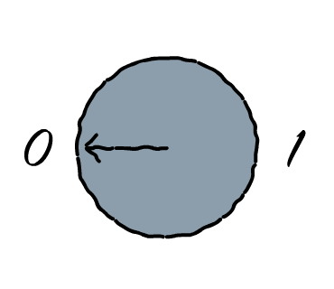
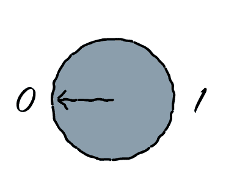

## Índice
* El futuro
* El presente
* Circuitos cuánticos
* Programación cuántica
* Números grandes
> La computación cuántica el uso de las propiedades de la mecánica cuántica para la aceleración en la resolución de problemas computables.

Parece que la computación cuántica es más poderosa que la computación clásica pero **no lo hemos probado**.

En el futuro utilizaremos librerías específicas de dominio como CUDA u OpenCV.
```python
from qiskit_acqua import Operator, run_algorithm
from qiskit_acqua.input import get_input_instance
pauli_dict = {
'paulis': [
{"coeff": {"imag": 0.0, "real": -1.052373245772859}, "label": "II"},
{"coeff": {"imag": 0.0, "real": 0.39793742484318045}, "label": "ZI"},
{"coeff": {"imag": 0.0, "real": -0.39793742484318045}, "label": "ZZ"},
{"coeff": {"imag": 0.0, "real": 0.18093119978423156}, "label": "XX"}
]
}
algo_input = get_input_instance('EnergyInput')
algo_input.qubit_op = Operator.load_from_dict(pauli_dict)
params = {
'algorithm': {'name': 'VQE'},
'optimizer': {'name': 'SPSA'},
'variational_form': {'name': 'RY', 'depth': 5},
'backend': {'name': 'local_qasm_simulator'}
}
result = run_algorithm(params, algo_input)
print(result['energy'])
```
Y utilizaremos los algoritmos que vienen con ella.

El aspecto creativo consistirá en reformular problemas clásicos...

...en términos de **algoritmos cuánticos**.

¡Añade tu augurio distópico favorito aquí!
Referencias:
* [A Short Guide to Hard Problems](https://www.quantamagazine.org/a-short-guide-to-hard-problems-20180716/)
* [Finally, a Problem That Only Quantum Computers Will Ever Be Able to Solve](https://www.quantamagazine.org/finally-a-problem-that-only-quantum-computers-will-ever-be-able-to-solve-20180621/)
* [9 Dots Puzzle SOLVED (using just 1 line!)](https://youtu.be/LaMqV-E0vWM?t=50)
* [Qiskit Acqua](https://www.qiskit.org/acqua)
* [How to measure a molecule’s energy using a quantum computer ](https://www.ibm.com/blogs/research/2017/09/quantum-molecule/)
> The name Quantum Advantage means that in certain key and real application areas we’ll be able to say, (...) that quantum computing provides significant processing time or memory use advantages.
¿2020? ¿2025? ¿Y mientras?
* [IBM Qiskit](https://github.com/Qiskit/) es una API en Python para contruir algoritmos cuánticos y ejecutarlos en **dispositivos reales** o simuladores.
* [Microsoft Q#](https://docs.microsoft.com/en-us/quantum/quantum-qr-intro?view=qsharp-preview) es un lenguaje de **alto nivel** para expresar algoritmos cuánticos.
* [Quirk](https://algassert.com/quirk) es un simulador online. **Basta con un navegador** con WebGl.
Datos desalentadores de los procesadores cuánticos actuales:
* 100 micro-segundos de [coherencia](https://en.wikipedia.org/wiki/Quantum_decoherence) (tiempo de ejecución).
* Puesta a punto de milisegundos; productividad del 10%.
* Temperatura de operación de [3 mK](https://en.wikipedia.org/wiki/Absolute_zero).
* Del orden de ¡miles! de cúbits extra por cada cúbit lógico libre de error.
Referencias
* [Quantum Ready now, Quantum Advantage tomorrow](https://medium.com/@rssutor/quantum-ready-now-quantum-advantage-tomorrow-14739a28c6f5)
* [Qiskit and its Fundamental Elements](https://medium.com/qiskit/qiskit-and-its-fundamental-elements-bcd7ead80492)
* [My Quantum Circuit Simulator: Quirk](http://algassert.com/2016/05/22/quirk.html)
* [Quantum Error Correction for Beginners](https://arxiv.org/pdf/0905.2794.pdf)

El procesador cuántico al completo.

Un procesador cuántico **no sigue una arquitectura de Von Neumann**.

Un procesador cuántico está formado por cúbits que **son memoria y ALU**, a la vez.

Unos generadores de microondas manipulan los cúbits.

Construir circuitos cuánticos se parece a componer partituras.
[Quirk](https://algassert.com/quirk) es un compositor y simulador para navegador muy **cómodo de usar** y potente.
### Cúbits y superposición

Un bit clásico puede prepararse en uno de dos estados `0` o `1`.
Al leerse, se obtendrá, **con toda seguridad**, el valor en el que se ha preparado.

Un cúbit puede prepararse de muchas maneras, de forma que podemos **controlar la probabilidad** de que al leerse obtengamos `0` o `1`.

Por ejemplo para que haya el **doble de probabilidad de leer `0`, que de leer `1`**.
A este efecto se le llama **superposición de estados**.


Para poner un cúbit en superposición, al 50%, utilizamos la puerta de Hadamard.
### Estados y entrelazamiento

Si tenemos dos cúbits a `0`, el histograma de probabilidad tiene esta pinta.

Tras añadir una puerta `Hadamard` al cúbit de menor peso...

...se produce un **reparto de la probabilidad**.

Si añadimos otra puerta `Hadamard` al otro cúbit...

...se produce otro reparto de probabilidad.

La combinación de puertas anterior produce esta secuencia de cambios de estado.

Pero volvamos un momento al ejemplo anterior, con una sola puerta.

Las puertas cuánticas pueden intercambiar las columnas del histograma.

En particular, la puerta `CNOT` correlaciona dos cúbits de forma que **si la entrada de control es `1`, la entrada objetivo se invierte**.

Esto anula algunos cambios de estado.
A este fenómeno lo llamamos **entrelazamiento**.
### Amplitudes, fase e interferencia
Algunas operaciones no alteran el histograma de manera perceptible.

La puerta `Z`, en particular, **invierte la fase cuando el cúbit vale uno**.

Podría decirse que cambia la "dirección" del estado.
Pero ello no basta para alterar la probabilidad.
A este efecto lo llamamos **cambio de fase**.
El cambio de fase no se puede observar en el histograma de probabilidad...

...pero sí en el **histograma de amplitudes**.
La **probabilidad es el cuadrado de la amplitud**:
* Si la amplitud es `1/sqr(2)`, la probabilidad es `50%`.
* Si la amplitud es `-1/sqr(2)`, la probabilidad es `50%`.

Gracias al cambio de signo, podemos **combinar (sumar/restar) columnas del histograma** de forma que algunas posibilidades se anulen y otras se refuercen.
A este efecto lo llamamos **interferencia**.

El histograma de amplitudes se representa como un **vector** columna.

Las puertas son **matrices unitarias** con tantas filas como posibilidades.

Aplicar una puerta es **multiplicar** la matriz con el vector.

Aplicar una puerta es **multiplicar** la matriz con el vector.
Los elementos de la matriz sonnúmeros complejos
Referencias:
* [Quantum Computing Expert Explains One Concept in 5 Levels of Difficulty | WIRED](https://www.youtube.com/watch?v=OWJCfOvochA)
* [Quantum Computing for Computer Scientist](https://www.youtube.com/watch?v=F_Riqjdh2oM)
* [How to fold a Julia Fractal](http://acko.net/blog/how-to-fold-a-julia-fractal/)
Recapitulando I:
* La unidad operativa del procesador cuántico es el cúbit.
* Un cúbit se puede preparar de forma que se lea con resultado `0` o `1`, a una determinada probabilidad.
* Algunas puertas cambian estas probabilidades: **superposición**.
* Otras correlaccionan unos cúbits con otros: **entrelazamiento**.
Recapitulando II:
* La amplitud describe un estado cuántico.
* La **probabilidad es el cuadrado de la amplitud**.
* Algunas puertas pueden cambiar el signo de la amplitud de un suceso.
* Y otras pueden combinar la amplitud de distintos sucesos: **interferencia.**

¡Ojo! En el simulador, los cúbits superiores son los **menos significativos**. Es decir, **los de más a la derecha** en las representaciones binarias.
### El sumador con acarreo
```
A S I1 I0
---------
0 0 0 0
0 1 0 1
0 1 1 0
1 0 1 1
```
La tabla de verdad del sumador con acarreo, con las salidas primero.
Nuestro objetivo es, partiendo de este histograma:

Llegar a este:

### El algoritmo de Grover

Primero identificamos el elemento que queremos buscar.

Cambiamos su fase.

Realizamos la inversión sobre la media.
```
D3 D2 D1 D0 N2 N1 N0
---------------------
0 0 0 0 0 0 0
0 0 1 0 0 0 1
0 1 0 0 0 1 0
0 1 1 0 0 1 1
1 0 0 0 1 0 0
1 0 1 0 1 0 1
1 1 0 0 1 1 0
1 1 1 0 1 1 1
```
La tabla de verdad del multiplicador por dos, con las salidas al principio.
```
nuevo_valor = media - (valor - media)
nuevo_valor = -valor + 2 * media
v' = -I * v + 2 * media
media = P * v
P <=> matriz constante 1/N = 1/8
v' = -I * v + 2 * P * v
v' = (-I + 2 * P) * v
|--PUERTA--|
```
```
-1+2/8,2/8,2/8,2/8,2/8,2/8,2/8,2/8,
2/8,-1+2/8,2/8,2/8,2/8,2/8,2/8,2/8,
2/8,2/8,-1+2/8,2/8,2/8,2/8,2/8,2/8,
2/8,2/8,2/8,-1+2/8,2/8,2/8,2/8,2/8,
2/8,2/8,2/8,2/8,-1+2/8,2/8,2/8,2/8,
2/8,2/8,2/8,2/8,2/8,-1+2/8,2/8,2/8,
2/8,2/8,2/8,2/8,2/8,2/8,-1+2/8,2/8,
2/8,2/8,2/8,2/8,2/8,2/8,2/8,-1+2/8,
```
La matriz de difusión puede descomponerse en puertas cuánticas básicas.
```python
def grover(input_width, hash, reference):
for input in binary_combinations(input_width):
spawn(i => {
if hash(i) == reference: print('The answer is ' + i)
}, input)
```
Este programa resuelve el problema de la búsqueda desestructurada en, prácticamente, un paso.
```
1 000 000 000 000 000 000 000 000
| | |
| | | MIPS para un i7
| |
| | Un año de uso contínuo
|
| Un millón de años de uso contínuo
```
Para 10 caracteres, es necesario recorrer una lista de `2^80` elementos.
Un `1` y `24` ceros detrás.

x 10.000 M ([yobibyte](https://en.wikipedia.org/wiki/Yobibyte))
La función `binary_combinations` devuelve una lista de `2^80` elementos de 10 bytes.

Este circuito resuelve el problema de la búsqueda desestructurada en un sólo paso.
Para 10 caracteres necesitaríamos replicar el circuito `2^80` veces.
Suponiendo 1M de circuitos completos en 1 milímetro cuadrado.

> Si piensas que entiendes la mecánica cuántica, es que no la has entendido.
[Richard Feynman](https://en.wikipedia.org/wiki/Richard_Feynman)